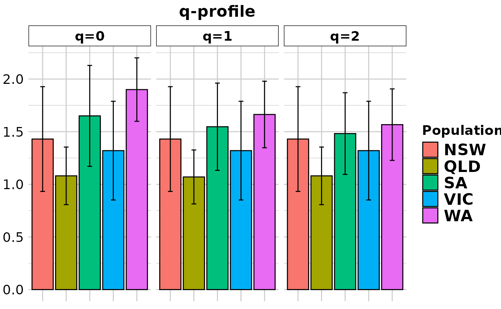

This script takes a genlight object and calculates alpha and beta diversity for q = 0:2. Formulas are taken from Sherwin et al. 2017. The paper describes nicely the relationship between the different q levels and how they relate to population genetic processes such as dispersal and selection.
Usage
gl.report.diversity(
x,
plot.out = TRUE,
pbar = TRUE,
table = "DH",
plot_theme = theme_dartR(),
plot_colors = discrete_palette,
save2tmp = FALSE,
verbose = NULL
)Arguments
- x
Name of the genlight object containing the SNP or presence/absence (SilicoDArT) data [required].
- plot.out
Specify if plot is to be produced [default TRUE].
- pbar
Report on progress. Silent if set to FALSE [default TRUE].
- table
Prints a tabular output to the console either 'D'=D values, or 'H'=H values or 'DH','HD'=both or 'N'=no table. [default 'DH'].
- plot_theme
Theme for the plot. See Details for options [default theme_dartR()].
- plot_colors
A color palette or a list with as many colors as there are populations in the dataset [default discrete_palette].
- save2tmp
If TRUE, saves any ggplots and listings to the session temporary directory (tempdir) [default FALSE].
- verbose
Verbosity: 0, silent or fatal errors; 1, begin and end; 2, progress log; 3, progress and results summary; 5, full report [default NULL, unless specified using gl.set.verbosity].
Value
A list of entropy indexes for each level of q and equivalent numbers for alpha and beta diversity.
Details
For all indexes, the entropies (H) and corresponding effective numbers, i.e. Hill numbers (D), which reflect the number of needed entities to get the observed values, are calculated. In a nutshell, the alpha indexes between the different q-values should be similar if there is no deviation from expected allele frequencies and occurrences (e.g. all loci in HWE & equilibrium). If there is a deviation of an index, this links to a process causing it, such as dispersal, selection or strong drift. For a detailed explanation of all the indexes, we recommend resorting to the literature provided below. Confidence intervals are +/- 1 standard deviation.
Function's output
If the function's parameter "table" = "DH" (the default value) is used, the output of the function is 20 tables.
The first two show the number of loci used. The name of each of the rest of the tables starts with three terms separated by underscores.
The first term refers to the q value (0 to 2).
The second term refers to whether it is the diversity measure (H) or its transformation to Hill numbers (D).
The third term refers to whether the diversity is calculated within populations (alpha) or between populations (beta).
In the case of alpha diversity tables, standard deviations have their own table, which finishes with a fourth term: "sd".
In the case of beta diversity tables, standard deviations are in the upper triangle of the matrix and diversity values are in the lower triangle of the matrix.
Plots are saved to the temporal directory (tempdir) and can be accessed with
the function gl.print.reports and listed with the function
gl.list.reports. Note that they can be accessed only in the
current R session because tempdir is cleared each time that the R session
is closed.
Examples of other themes that can be used can be consulted in
References
Sherwin, W.B., Chao, A., Johst, L., Smouse, P.E. (2017). Information Theory Broadens the Spectrum of Molecular Ecology and Evolution. TREE 32(12) 948-963. doi:10.1016/j.tree.2017.09.12
See also
Other report functions:
gl.report.bases(),
gl.report.callrate(),
gl.report.hamming(),
gl.report.heterozygosity(),
gl.report.hwe(),
gl.report.ld.map(),
gl.report.locmetric(),
gl.report.maf(),
gl.report.monomorphs(),
gl.report.overshoot(),
gl.report.pa(),
gl.report.parent.offspring(),
gl.report.rdepth(),
gl.report.reproducibility(),
gl.report.secondaries(),
gl.report.sexlinked(),
gl.report.taglength()
Author
Bernd Gruber (Post to https://groups.google.com/d/forum/dartr), Contributors: William B. Sherwin, Alexander Sentinella
Examples
div <- gl.report.diversity(bandicoot.gl[1:10,1:100], table = FALSE,
pbar=FALSE)
#> Starting gl.report.diversity
#> Processing genlight object with SNP data
#>
#> Warning: longer object length is not a multiple of shorter object length
#> Warning: longer object length is not a multiple of shorter object length
#> Warning: longer object length is not a multiple of shorter object length
#> Warning: longer object length is not a multiple of shorter object length
#> Warning: longer object length is not a multiple of shorter object length
#> Warning: longer object length is not a multiple of shorter object length
#> Warning: longer object length is not a multiple of shorter object length
#> Warning: longer object length is not a multiple of shorter object length

#> Completed: gl.report.diversity
#>
#>
div$zero_H_alpha
#> NSW QLD SA VIC WA
#> 0.43000000 0.08045977 0.65000000 0.32000000 0.90000000
div$two_H_beta
#> NSW QLD SA VIC WA
#> NSW NA 0.2194315 0.2531350 0.2773004 0.2080315
#> QLD 0.3182117 NA 0.1908566 0.2145991 0.1758510
#> SA 0.1540063 0.2797106 NA 0.2117318 0.1370718
#> VIC 0.2208454 0.3351417 0.2074499 NA 0.2179300
#> WA 0.1284917 0.2596723 0.1008261 0.1685408 NA
names(div)
#> [1] "nlocpop" "nlocpairpop" "zero_H_alpha" "zero_H_alpha_sd"
#> [5] "one_H_alpha" "one_H_alpha_sd" "two_H_alpha" "two_H_alpha_sd"
#> [9] "zero_D_alpha" "zero_D_alpha_sd" "one_D_alpha" "one_D_alpha_sd"
#> [13] "two_D_alpha" "two_D_alpha_sd" "zero_H_beta" "one_H_beta"
#> [17] "two_H_beta" "zero_D_beta" "one_D_beta" "two_D_beta"